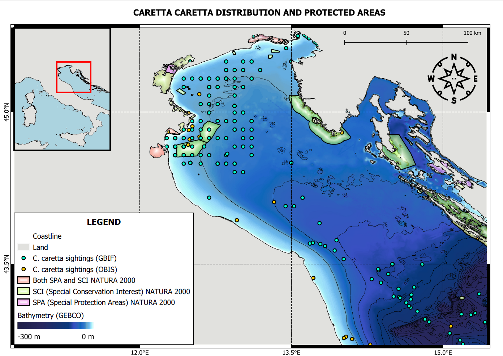
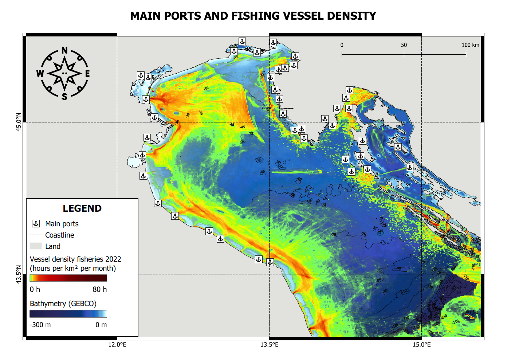
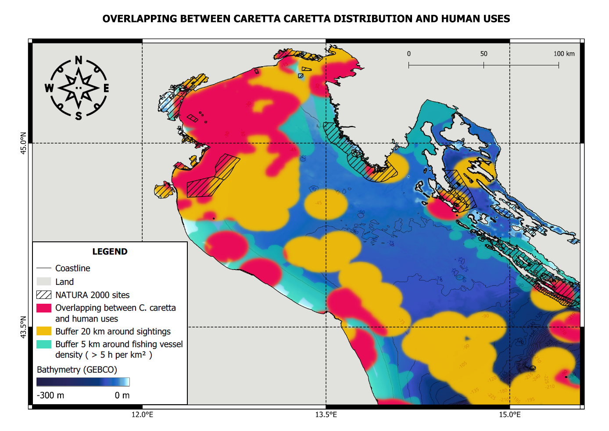

Marine Spatial Planning & Geographic Information Systems Project
This project was developed during the GIS and Marine Spatial Planning course as an academic exercise aimed at applying Geographic Information Systems (GIS) to a real marine conservation issue. The objective was to integrate multiple spatial datasets, produce thematic GIS maps and identify potential bycatch hotspots for the loggerhead turtle (Caretta caretta) in the Northern Adriatic Sea, demonstrating how spatial analysis can support ecosystem-based marine management and conservation planning.
Caretta caretta, the loggerhead turtle, is the most abundant sea turtle species in the Mediterranean Sea. The northern Adriatic Sea, particularly FAO GSA-17, is considered an essential foraging ground for this species, thanks to the high productivity sustained by the Po River discharges.
However, this area is also one of the most overfished in the Mediterranean, with high fishing vessel density and several major Italian ports. Bycatch represents the major threat to C. caretta survival, with more than 10,000 accidental catches occurring annually in the northern Adriatic alone.
This project integrated spatial data from multiple authoritative sources — EMODnet, GBIF, OBIS, GEBCO and the European Environment Agency — within QGIS to identify potential bycatch hotspots and evaluate the role of Natura 2000 protected areas in turtle conservation.
Analyse the spatial relationship between loggerhead turtle distribution and fishing vessel density in the Northern Adriatic Sea.
Locate areas with the highest potential bycatch risk through buffer analysis and spatial overlap assessment.
Assess the extent to which existing Natura 2000 protected areas overlap with high-risk zones for turtle bycatch.
Show how Geographic Information Systems can support evidence-based marine conservation and spatial planning.
All spatial datasets were harmonized within QGIS before analysis. The following authoritative sources were used:
Fishing vessel density
Protected areas (SPA & SCI)
Italian Adriatic ports
Loggerhead turtle occurrences
Marine biodiversity records
Bathymetry
Coastline
GEBCO bathymetry data were used to characterise the seafloor morphology of the Northern Adriatic.
GBIF and OBIS occurrence records were overlaid to visualise turtle distribution patterns.
EMODnet vessel density data were used to represent fishing effort across the study area.
Natura 2000 sites (SPA and SCI) were mapped to assess their spatial relationship with turtle habitats.
20 km buffers were generated around turtle sightings based on maximum daily movement speed.
Overlap between turtle buffers and high fishing effort areas was quantified.
Areas with the greatest overlap were identified as potential bycatch hotspots.
Results were visualised through thematic GIS maps for clear communication.
Click on each map to explore the spatial patterns of turtle distribution, fishing activity and potential bycatch risk in the Northern Adriatic Sea.

Distribution records from GBIF and OBIS were combined with Natura 2000 protected areas and bathymetry to visualize the spatial relationship between turtle occurrence and conservation measures.
Click to enlarge
Spatial distribution of fishing vessel density together with major ports highlights the intensity of fishing activities across the Northern Adriatic.
Click to enlarge
Buffers were generated around turtle sightings and high fishing effort areas to identify zones where the overlap between turtles and fisheries is greatest, providing a spatial proxy for bycatch risk.
Click to enlargeThe main bycatch hotspot was identified in the area between Ancona's harbour and the Po River delta, with the highest spatial coincidence between turtle habitats and fishing effort.
There is a consistent overlapping between fishing activities and C. caretta habitats in FAO GSA-17, explaining the high bycatch rate of this area.
Natura 2000 sites only partially overlap with the highest-risk zones, suggesting that existing protected areas may not fully address bycatch risk.
GIS analysis effectively identified areas where mitigation measures — such as Turtle Excluder Devices (TEDs) or fishing effort restrictions — could be prioritised to reduce bycatch mortality.
The spatial analysis conducted in this project demonstrates how GIS can support evidence-based marine conservation and ecosystem-based management. The results highlight the importance of integrating spatial data into decision-making processes for:
The identification of bycatch hotspots through spatial analysis provides a scientific basis for implementing targeted conservation measures, such as Turtle Excluder Devices (TEDs), limiting haul duration, or establishing temporary fishing restrictions in areas with high turtle abundance.
Download the complete GIS project report including detailed methodology, spatial analysis results and management recommendations.
PDF document · GIS Project Report · 1.8 MB
The project was entirely developed using peer-reviewed scientific literature together with authoritative geospatial datasets from EMODnet, GBIF, OBIS and GEBCO.
This project demonstrated how Geographic Information Systems can be applied to real-world marine conservation challenges, integrating spatial data from multiple sources to identify bycatch hotspots and support evidence-based decision making for the protection of threatened marine species.